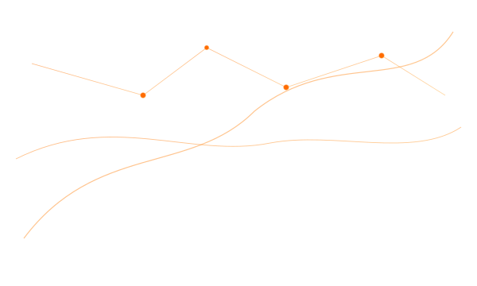

⚡
AI Helpdesk
Resolve issues instantly with AI-powered support.
Fast, reliable, and intelligent IT helpdesk for modern enterprises.

StrataMind is an AI-first IT support platform for modern teams. We combine an instant AI helpdesk,
intelligent ticket routing, and a self-updating knowledge hub to reduce resolution times and boost CSAT.
Resolve issues instantly with AI-powered support. Seamless tracking and intelligent routing. Centralized knowledge base powered by AI.
⚡
AI Helpdesk
🗂️
Smart Ticketing
📚
Knowledge Hub
Ready to transform your IT support?
Start Free Trial